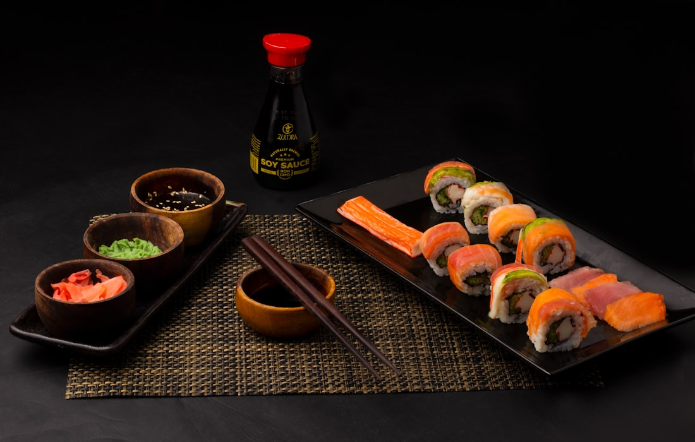

Sashimi
旬魚のお造り
その日の市場から仕入れた鮮魚を、板前が丁寧に引き立てます。三田の清水で締めた真鯛・鰤など、季節の恵みを。
¥ ― 価格応相談兵庫県三田市は、清らかな水と豊かな里山に恵まれた土地。 「たつや」では、地元農家から届く季節の野菜や、 三田牛をはじめとする丹波の幸を、 できるかぎりそのまま活かす料理を大切にしています。
過剰な装飾より、素材の声を聴く。 だしの引き方ひとつに気を配り、 お客様が一口目に感じるほっとした笑顔のために、 毎日の仕込みを重ねています。
三田の農家・生産者と直接つながり、その季節ならではの食材を厳選してお届けします。
本枯れ節と真昆布を使い、その日の料理に合わせて丁寧にだしを引いています。
カウンター席もご用意。一人でも気兼ねなく、ゆっくりとお過ごしいただけます。
三田駅近くでこんなに本格的な和食が食べられるとは思いませんでした。 お造りの鮮度が抜群で、だしの引き方が丁寧。 接待にも使わせていただいています。
カウンター席で一人ゆっくり食事できるのがとても嬉しいです。 板前さんの手元を見ながらいただく焼き魚は格別。 季節ごとに通いたくなるお店です。
地元の食材を大切にした料理が素晴らしい。 炊き合わせは優しい味わいで、体が喜ぶ感覚。 駅から近いので仕事帰りにふらっと寄れるのも魅力です。
三田駅から徒歩約3分
| 店名 | たつや |
|---|---|
| 住所 | 〒― 兵庫県三田市（正式住所は未確定） |
| 電話 | ―――（確定後に掲載） |
| 営業時間 | 昼：―：―― 〜 ―：―― 夜：―：―― 〜 ―：―― （確定後に掲載） |
| 定休日 | ―曜日（確定後に掲載） |
| 席数 | ―席（確定後に掲載） |
| アクセス | JR宝塚線 三田駅 徒歩約3分 |
ご予約・お問い合わせ
―― ―――― ―――― 電話番号は確定後に掲載いたします